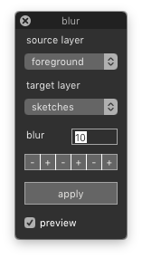

blur¶
-
class
BlurGlyphsDialog[source]¶ Bases:
hTools3.dialogs.hDialog,defconAppKit.windows.baseWindow.BaseWindowControllerA dialog to blur and trace selected glyphs.
from hTools3.dialogs.glyphs.blur import BlurGlyphsDialog BlurGlyphsDialog()
-
title= 'blur'¶
-
key= 'com.hipertipo.hTools3.dialogs.glyphs.blur'¶
-
settings= {'strokeColor': (0, 1, 0), 'blurValue': 10, 'fillAlpha': 0.35, 'fillColor': (0, 1, 0), 'strokeWidth': 2}¶
-
sourceLayer¶
-
targetLayer¶
-
blurValue¶
-